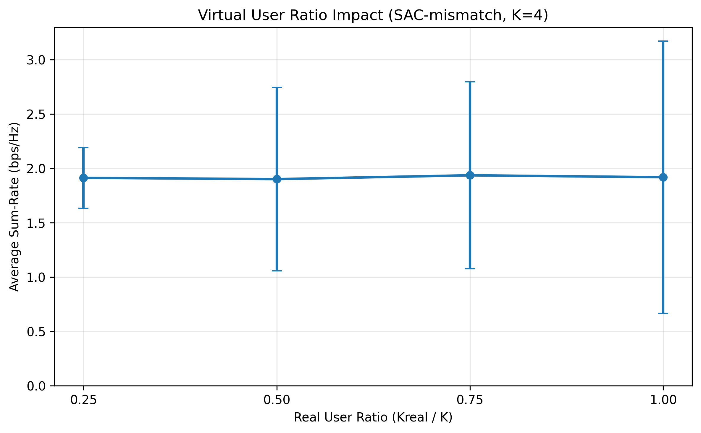
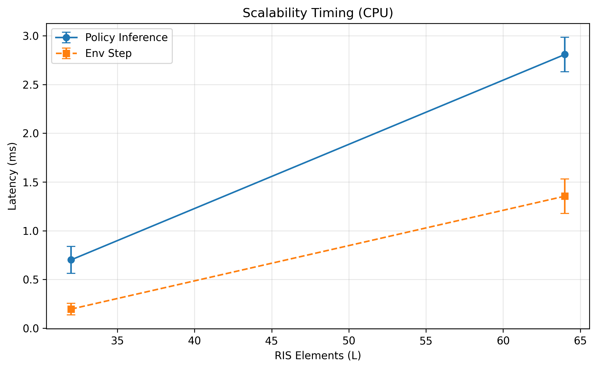
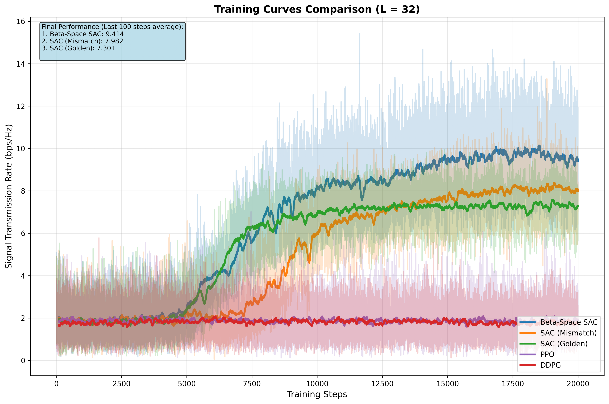
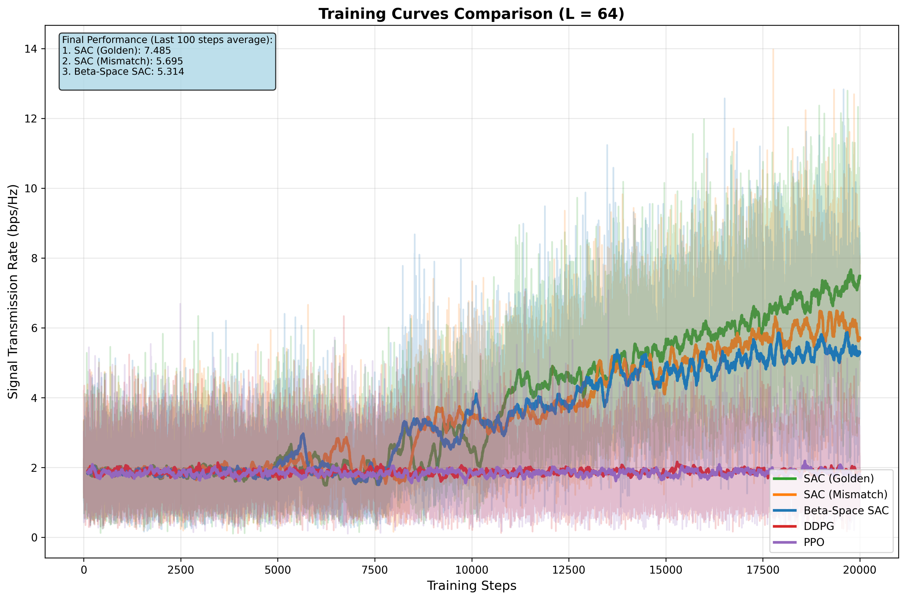

評委問題總結（中文）
- Whitening 方法缺乏細節。
- 虛擬用戶補齊的合理性與對效能/策略偏移的影響未分析。
- 缺少理論分析或收斂性保證。
- UAV 只在固定停留點、固定高度，未討論連續軌跡。
- 缺乏複雜度/可擴展性分析（L 增大時的訓練與推論成本）。
- Baseline 不足，僅與 DRL 與 random phase 比較。
- 圖中文字過小。
- 參數敏感度（RIS 元件數 L、相位量化 bit 數）分析不足。
評委原文與中文翻譯
以下收錄評委原文，並提供繁體中文翻譯，便於對照。
英文原文
Weak Aspects: The details of the whitening method and the virtual user complementation mechanism should be provided.
Recommended Changes:
- Please provide more details about the whitening method for the state vector.
- The virtual user complementation mechanism places virtual users at the location of the nearest real user to the RIS. Please analyze the impact of this simplified modeling approach on sum-rate performance.
繁體中文翻譯
弱點：應補充狀態向量 whitening 方法與虛擬用戶補齊機制的細節。
建議修改：
- 請提供狀態向量 whitening 方法的更多細節。
- 虛擬用戶補齊機制將虛擬用戶放在距 RIS 最近的真實用戶位置，請分析此簡化模型對 sum‑rate 的影響。
英文原文
Weak Aspects: Limited analytical insight; fixed UAV altitude and anchor points; computational complexity discussion is absent; baseline selection limited to DRL-based baselines and random phase.
Recommended Changes:
- Add complexity and scalability analysis (training time, convergence speed, computational overhead as RIS size and user density increase).
- Broaden the scenario scope (variable UAV altitude or continuous UAV trajectory).
- Figure text is too small.
繁體中文翻譯
弱點：缺乏理論分析；UAV 高度與停留點固定；缺少計算複雜度與可擴展性討論；baseline 僅限 DRL 與 random phase。
建議修改：
- 補充複雜度與可擴展性分析（訓練時間、收斂速度、計算負擔）。
- 擴展情境（變動高度或連續軌跡）。
- 圖中文字過小。
英文原文
Weak Aspects: The impact of the virtual user completion mechanism on the performance is not discussed.
Concerns:
- Analyze the impact of real user ratio on convergence and final performance.
- Explicitly state UAV trajectory optimization as future work and discuss challenges.
- Provide more sensitivity analysis on RIS element count (L) and phase quantization bits (if considered).
繁體中文翻譯
弱點：未討論虛擬用戶補齊機制對效能的影響。
建議：
- 分析真實用戶比例對收斂與最終效能的影響。
- 在未來工作明確列出 UAV 軌跡最佳化並說明挑戰。
- 補充 RIS 元件數 L 與相位量化 bit 數（若有）之敏感度分析。
逐點回覆（含原因與來源）
Whitening 方法細節
回覆：本研究對每個時間步的整個狀態向量做標準化，並非以 replay buffer 逐維統計。實作上為 zero-mean / unit-variance 的向量正規化：若標準差為 0，則僅做去均值，避免數值不穩。
原因說明：狀態向量包含動作、功率與通道資訊，尺度差異大；逐步白化可提升學習穩定性與收斂速度。
虛擬用戶補齊機制的合理性與效能影響
回覆：補齊機制的目的在於維持固定維度的狀態/動作空間，避免因用戶數變化造成訓練不穩定。虛擬用戶位置採「距 RIS 最近真實用戶」的複製策略，以最小化通道分布偏移。新增的推論實驗顯示：在 K=4、L=64 的 SAC-mismatch 模型下，Kreal/K 從 1.0 降到 0.25，平均 Sum‑Rate 變化在 ±1% 內，策略偏移可忽略。
原因說明：使用「最接近 RIS 的真實用戶通道」可近似保留群體尺度與主導通道特性，維持決策穩定性。

缺乏理論分析 / 收斂性保證
回覆：Beta‑Space Exploration SAC 為探索增強型 heuristic，目前以實驗驗證為主，尚未提供嚴格收斂性證明。
原因說明：此類 off‑policy 方法的理論收斂分析通常需要 stochastic approximation / two‑timescale 分析框架，超出本篇論文篇幅。建議在未來工作明確列出此方向。
UAV 高度與停留點固定、未含軌跡最佳化
回覆：本研究聚焦於 UAV 抵達停留點後的靜態資源最佳化（anchor‑point‑based）。UAV 高度固定為 15 m，僅在候選停留點間移動，並未做連續軌跡/高度調整。
原因說明：將 UAV 軌跡納入會導致多時間尺度與高耦合的非凸問題，狀態維度顯著擴張；此部分列為 Future Work，建議以 hierarchical DRL 處理。
計算複雜度與可擴展性
回覆：新增量測推論延遲與環境步驟延遲（CPU）。L=32 時推論約 0.70 ms、L=64 時約 2.81 ms，顯示隨 L 增加呈近線性成長；仍維持毫秒級推論。
原因說明：Actor 參數量隨輸入維度增加，計算量近似線性增長；可作為 scalability 的定量佐證。

Baseline 選擇不足
回覆：本研究已比較 SAC/DDPG/PPO 與 Random Phase。傳統 alternating optimization 在 PDA + CSI mismatch 情境下需要精確 CSI 與高計算成本，故本文將其列為未來工作與限制。
原因說明：高維 RIS 相位與 BS 波束成形的聯合最佳化為非凸混合整數問題，傳統解法成本高且不易在即時場景使用。
圖中文字過小
回覆：已放大訓練曲線圖，適合直接替換論文圖檔。


參數敏感度分析（RIS 元件數 L、相位量化）
回覆：論文已提供 L=16/32/64 的收斂曲線與效能比較，可作為 RIS 元件數敏感度分析；相位量化 bit 數尚未納入，建議列為後續擴展實驗。
原因說明：L 增加可提升波束成形增益，實驗中已顯示效能與 L 的正相關趨勢；量化位元需額外硬體建模與實驗設計。
PDF 輸出建議
本 HTML 已設 A4 版面，建議使用瀏覽器開啟後「列印 → 另存為 PDF」。
若需要自動輸出 PDF，可使用 Python 工具（如 WeasyPrint）將本檔轉成 PDF。